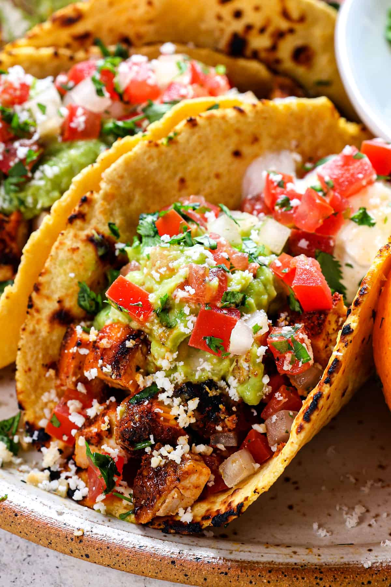

Street Tacos

Delicious tacos!
Learn how to make street tacos for your next fiesta or simple weekday meal. This style of wrap is easy to customize. For this version, I’ll share my delicious citrusy marinade to make each bite of steak juicy and delicious.
You only need a quick 30-minute soak before cooking the meat on the stovetop.
- steak
- tortillas
- limes
- orange juice
- lime juice
- onions
- garlic
- cilantro
- In a medium bowl, whisk together the olive oil, orange juice and zest, lime juice, and zest, soy sauce, minced garlic, cumin, dried oregano, chili powder, salt, and pepper.
- Typically, the steak is left whole at taco stands or Mexican restaurants and then chopped into smaller pieces. However, I recommend cutting the steak into 1/2-inch pieces for more flavorful bites. This creates more surface area for the marinade to flavor the meat while other seasonings stick to the surface.
Another bonus is that it cooks the meat faster on the stovetop, resulting in a super juicy steak. If you prefer carne asada street tacos, keep the steak in one piece and marinate for at least an hour so it can be grilled.
- Soak the steak in a marinade to elevate the taste. The smaller pieces require less time to marinate, about 30 minutes. However, you can marinate for up to 8 hours for even more flavor infusion. Beyond that time, the muscle fibers dry out too much from the salt and acid.
- Use a large cast-iron skillet or saute pan to cook the pieces. Warm the olive oil in a skillet over medium-high heat, then carefully add the steak to a single layer in the pan. Let it sear for about 2 minutes, then saute to cook the beef.
- I always warm the tortillas over medium heat in a skillet before filling them. This makes the starches in the corn or flour tortillas more flexible and soft to prevent breaking. The light browning also makes the tortilla more flavorful.
- Fill the tortillas with the steak, then top with onion and cilantro, and maybe some pickled red onions. Serve with lime wedges.
Go back home.